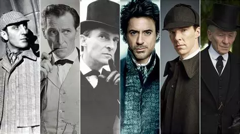
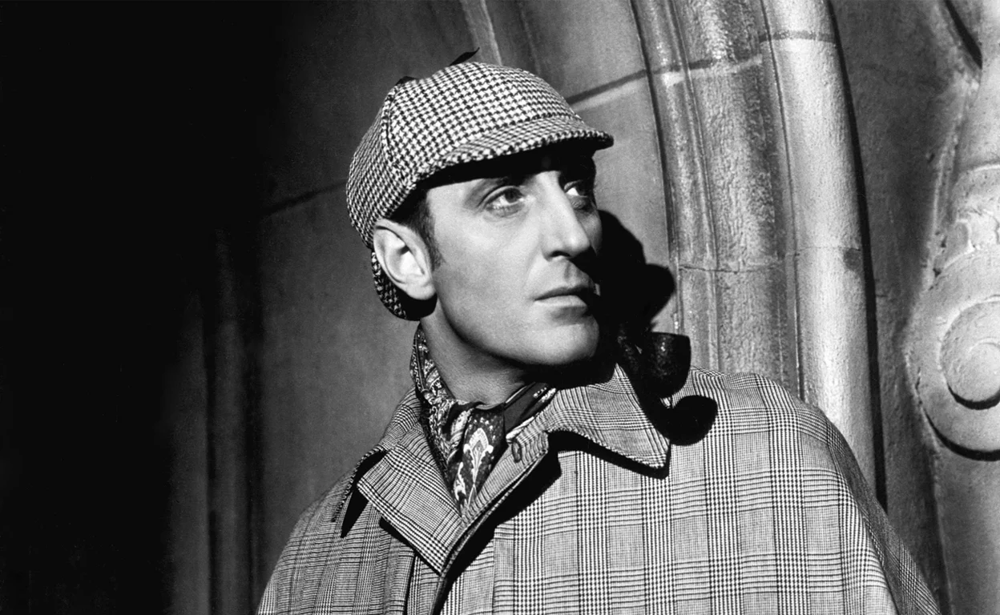
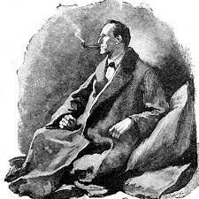
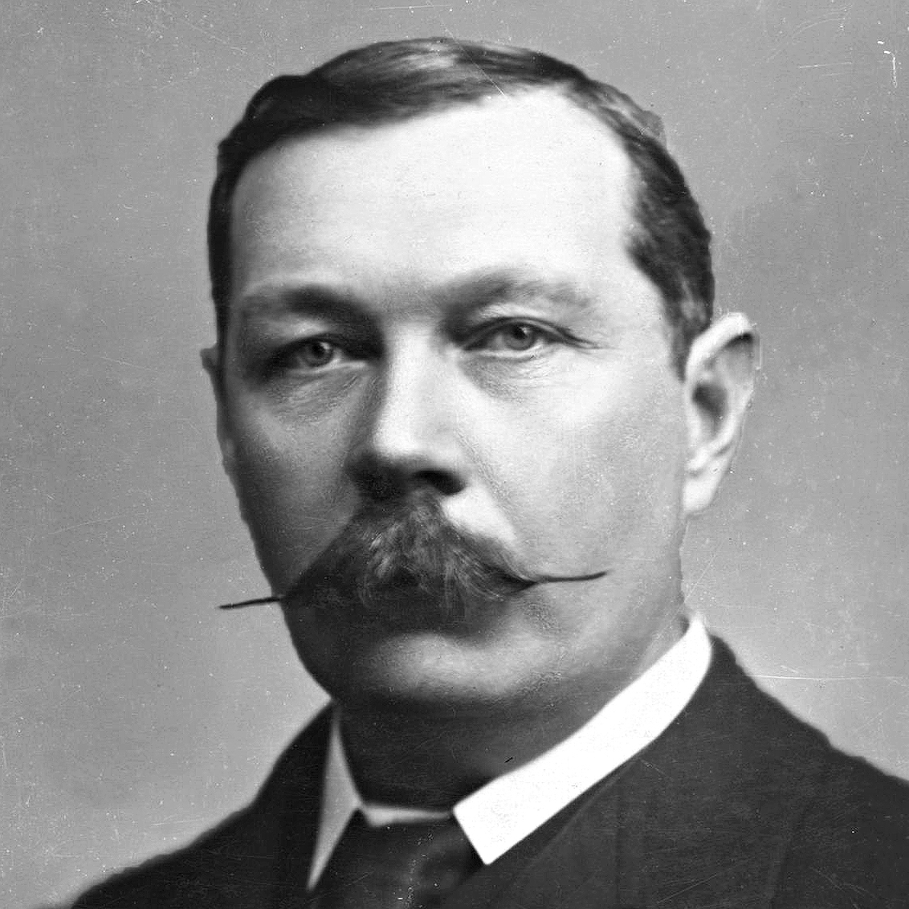

Arthur Conan Doyle
Catalogo Principal
Un médico con vocación literaria
Arthur Conan Doyle nació en 1859 en Edimburgo, Escocia, en el seno de una familia de origen irlandés con inclinaciones artísticas. Aunque hoy lo recordamos por sus libros, originalmente se formó como médico en la Universidad de Edimburgo. Fue precisamente durante sus años de estudio donde conoció al profesor Joseph Bell, cuya asombrosa capacidad de observación y deducción lógica sirvió como la chispa de inspiración directa para crear a Sherlock Holmes. Mientras esperaba la llegada de pacientes en su modesta clínica en Southsea, Doyle comenzó a escribir relatos para complementar sus ingresos, sin imaginar que sus historias cambiarían el género policial para siempre.
La sombra de Sherlock Holmes
El éxito masivo de Sherlock Holmes fue, irónicamente, una carga para Doyle. A pesar de la fama y la fortuna que le brindaba el detective de Baker Street, el autor sentía que sus obras de ficción histórica (como The White Company) eran su verdadero legado literario. Llegó a sentirse tan "atrapado" por su creación que en 1893 decidió matar a Holmes en las cataratas de Reichenbach. Sin embargo, la presión del público fue tan abrumadora —incluyendo personas que llevaban luto en las calles y miles de cartas de protesta— que finalmente tuvo que resucitar al detective años después en El sabueso de los Baskerville.



El doctor John H. Watson
El doctor John H. Watson es mucho más que el acompañante de Sherlock Holmes; es el corazón humano, el puente con el lector y el cronista que transformó los fríos razonamientos del detective en una leyenda inmortal. Creado por Sir Arthur Conan Doyle como un médico militar herido en la guerra de Afganistán, Watson aporta al 221B de Baker Street el contraste perfecto para la mente calculadora de Holmes: representa la empatía, el sentido común y la caballerosidad victoriana. Aunque muchas adaptaciones lo han retratado erróneamente como un personaje torpe o cómico, en los relatos originales Watson es un hombre de acción sumamente competente, un tirador valiente y, sobre todo, un amigo de una lealtad inquebrantable capaz de tolerar las excentricidades del genio. A través de sus ojos, la fría ciencia de la deducción se vuelve cercana y emocionante, demostrando que mientras Holmes resolvía los misterios más intrincados de Londres, fue la pluma de Watson la que los rescató del olvido.
Sir Arthur Conan Doyle
Sir Arthur Conan Doyle fue un escritor de una productividad asombrosa cuya vasta trayectoria literaria abarca mucho más que el género policial que lo inmortalizó. Nacido en Escocia y médico de profesión, Doyle comenzó a escribir para complementar sus escasos ingresos iniciales, sin imaginar que se convertiría en uno de los autores más leídos del planeta. Aunque el mundo entero lo recuerda por su maestría en el misterio, el propio autor mantenía una tensa relación con su fama, ya que consideraba que sus novelas de corte histórico constituían su literatura más seria y elevada. Obras minuciosamente documentadas como La compañía blanca y su precuela Sir Nigel, ambas ambientadas en los campos de batalla medievales de la Guerra de los Cien Años, o Micah Clarke, que relata con gran viveza la rebelión de Monmouth del siglo diecisiete, eran el verdadero orgullo de un novelista que siempre aspiró a ser recordado como un cronista del honor y la caballerosidad británica.



Racionalismo y deduccion
A pesar de sus ambiciones históricas, fue el universo del racionalismo y la deducción el que definió su carrera a través de la monumental saga de Sherlock Holmes. Este canon literario, compuesto por cuatro novelas extensas y cincuenta y seis relatos cortos, revolucionó la literatura de detectives para siempre. Desde la publicación de Estudio en escarlata en 1887, donde se fragua la legendaria amistad entre el detective y el doctor John H. Watson, pasando por la atmósfera gótica de El sabueso de los Baskerville, hasta sus múltiples antologías de cuentos, Doyle construyó un templo de la lógica. Sin embargo, la sombra de Holmes se volvió tan asfixiante para el autor que, en un arrebato por recuperar su libertad creativa, decidió matarlo en el relato El problema final de 1893. La reacción popular fue inédita: los lectores llevaron luto público en las calles de Londres y cancelaron masivamente las suscripciones a la revista The Strand, lo que sumado a incentivos económicos astronómicos obligó a Doyle a claudicar y resucitar a su héroe años más tarde en El regreso de Sherlock Holmes.
Espiritismo y últimos años
En la última etapa de su vida, Doyle experimentó un giro profundo hacia el espiritismo. Tras la pérdida de su hijo mayor en la Primera Guerra Mundial y de otros familiares cercanos, dedicó gran parte de su energía y fortuna a investigar y promover la comunicación con el más allá. Esta obsesión lo llevó a situaciones curiosas, como defender fervientemente la veracidad de las fotos de las "Hadas de Cottingley" (que resultaron ser un fraude) y entablar una famosa amistad y posterior rivalidad con el ilusionista Harry Houdini. Falleció en 1930, dejando tras de sí un legado que abarcó desde la medicina y la justicia penal hasta la ciencia ficción y lo paranormal.
El catálogo esencial de Arthur Conan Doyle se centra en la obra de Sherlock Holmes, compuesta por 4 novelas y 56 relatos, incluyendo Estudio en escarlata, El signo de los cuatro, El sabueso de los Baskerville y El valle del terror. Destacan antologías como Las aventuras de Sherlock Holmes y Las memorias de Sherlock Holmes.
Novelas Principales de Sherlock Holmes (Orden Recomendado)
-
Estudio en escarlata (A Study in Scarlet, 1887)
-
El signo de los cuatro (The Sign of Four, 1890)
-
El sabueso de los Baskerville (The Hound of the Baskervilles, 1902)
-
El valle del terror (The Valley of Fear, 1915)
Colecciones de Relatos Clave
Las aventuras de Sherlock Holmes (The Adventures of Sherlock Holmes)
Las memorias de Sherlock Holmes (The Memoirs of Sherlock Holmes)
El regreso de Sherlock Holmes (The Return of Sherlock Holmes)
Su último saludo (His Last Bow)
El archivo de Sherlock Holmes (The Case-Book of Sherlock Holmes)
(info. Wikipedia Conan Doyle)
(info. National Geografic Conan Doyle)
Aaron Bonacci, Bautista Da Costa, Joaquin Principi